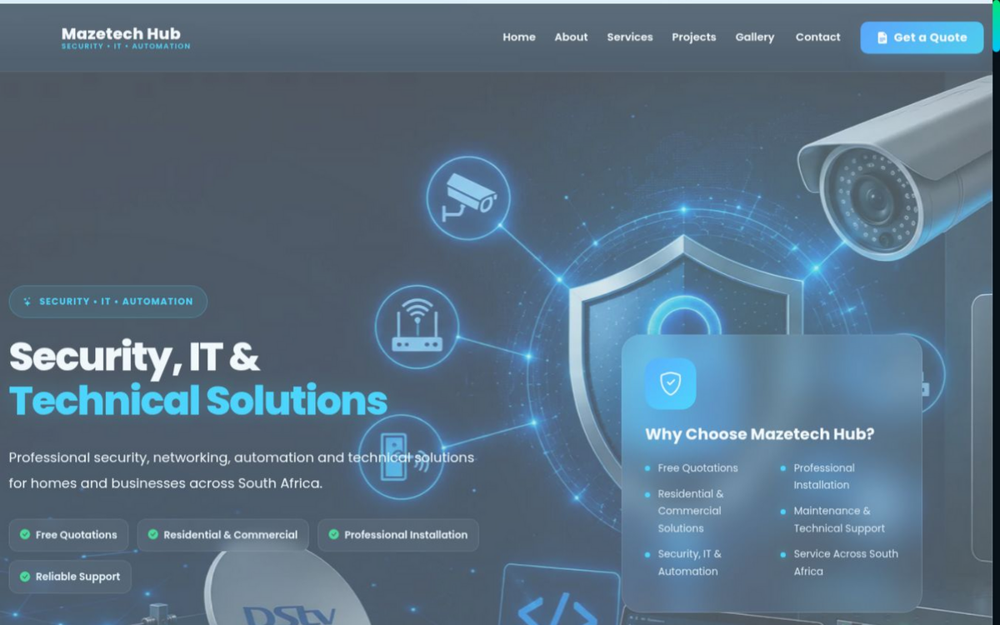
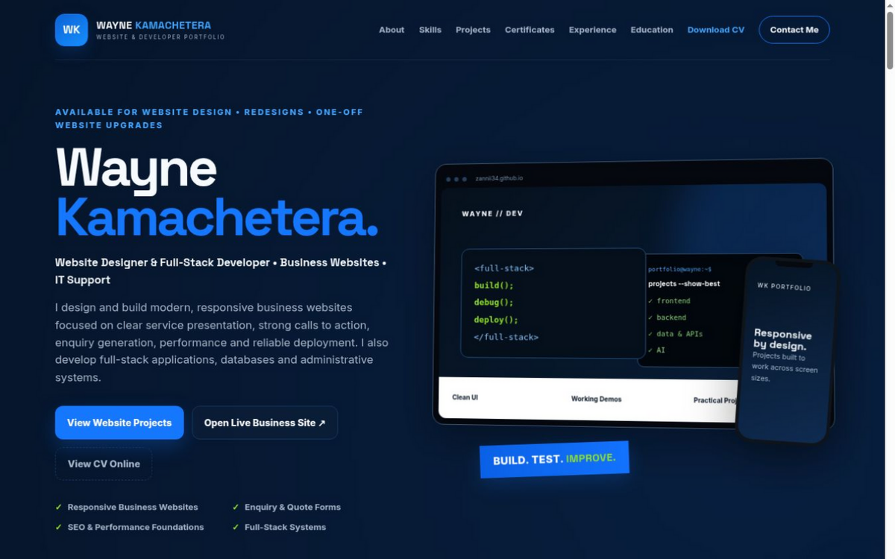

Interfaces & Responsive Web
HTML5CSS3JavaScriptReactTailwind CSSBootstrapResponsive DesignMobile UXLanding Pages
Website Designer & Full-Stack Developer • Business Websites • IT Support
I design and build modern, responsive business websites focused on clear service presentation, strong calls to action, enquiry generation, performance and reliable deployment. I also develop full-stack applications, databases and administrative systems.
Projects built to work across screen sizes.
I build responsive, business-focused websites using HTML, CSS and JavaScript, then strengthen them with clear information architecture, service pages, calls to action, enquiry journeys, performance checks and deployment support.
My strongest project is the live MazeTech Hub public website and protected Flask administration system. It combines service presentation, quote requests, customer and quotation workflows, reporting, analytics, SEO foundations and an always-on production deployment.
I also build Python/Flask and Django applications, REST API integrations, SQL database workflows and interactive JavaScript tools. Every project is tested for usability, responsive behaviour and clear communication.
My skills cover the interface, server-side logic, data layer, integrations, development workflow and practical technical support.
Flexible support for new websites, focused redesigns and one-off upgrades—from structure and responsive UX through launch checks.
Professional service websites structured around trust, clear information, calls to action and customer enquiries.
Stronger page structure, branding, visual hierarchy, mobile UX, performance and conversion-focused improvements.
Focused pages for services, sectors and campaigns with clear messaging and relevant customer journeys.
Quote requests, contact forms, lead capture, status workflows and supporting administration tools.
Metadata, accessible structure, sitemaps, responsive media, analytics setup and deployment checks.
Python/Flask logic, SQL databases, authentication, dashboards, reports, APIs and business workflows.
Start with the production and business-website work, then filter the complete project set by website, full-stack, backend, frontend, API or AI.
Selected work: eight focused projects covering production work, business demos, portfolio development, API applications, backend showcases and algorithms.

LIVE PUBLIC WEBSITEDesigned, built, deployed and maintained a responsive business website with service presentation, quote requests and a protected Flask administration system.
 BUSINESS WEBSITE DEMO
BUSINESS WEBSITE DEMOConstruction-sector website concept with dedicated branding, locally bundled project photography, clear services, responsive navigation, gallery and enquiry interaction.

LIVE PORTFOLIO WEBSITEDesigned and developed this responsive portfolio to present live demos, case studies, technical evidence and direct contact options clearly across screen sizes.
 PROJECT SCREENSHOT
PROJECT SCREENSHOTPokéAPI-powered explorer with search, type filtering, sorting, random discovery and a persistent six-Pokémon team.
 PROJECT SCREENSHOT
PROJECT SCREENSHOTOpen-Meteo weather application with city search, device location support, current conditions and a five-day forecast without an API key.
 PROJECT SCREENSHOT
PROJECT SCREENSHOTInteractive showcase based on a Flask/SQLAlchemy admin system for quotations, customer records, statuses, dashboards and operational workflows.
 PROJECT SCREENSHOT
PROJECT SCREENSHOTInteractive browser showcase adapted from my Django task-list project, demonstrating authenticated task workflows, API-style CRUD and filtering concepts.
 PROJECT SCREENSHOT
PROJECT SCREENSHOTPlayable browser adaptation of my CS50 AI work. The opponent uses minimax to evaluate future board states and choose optimal moves.
Additional repository work includes CS50 AI and Django projects that demonstrate reasoning, algorithms and backend fundamentals.
Knowledge-based inference and logical deduction for identifying safe cells and mines.
Sampling and iterative algorithms for estimating page importance in a linked corpus.
Constraint satisfaction using node/arc consistency and backtracking search.
Coursework covering models, views, templates, authentication, APIs and data-driven web workflows.
Hands-on IT work and software projects have helped me develop practical troubleshooting, development, data-handling and technical problem-solving skills.
Assisted with CCTV, access control, intercoms, camera installation, cabling, basic networking, Windows support, device setup, fault finding and general technical troubleshooting.
Designed and deployed a live business website, built responsive service and enquiry journeys, developed Flask/SQL administration workflows, integrated APIs and maintained reliable production hosting.
Comfortable capturing, organizing and checking digital information using structured forms, spreadsheets and database-backed systems, with attention to accuracy and consistency.
Selected technical certificates are available here. Full academic records and personal documents are shared privately when requested.
Programming foundations, logic, events, conditions and computational thinking.
View Certificate →Computer science fundamentals and structured problem solving.
View Certificate →Python programming foundations and practical problem solving.
View Certificate →Artificial intelligence concepts and Python-based problem solving.
View Certificate →Education documents: Full academic records and the Matric certificate are available privately on request.
Focused study in programming, software development, web technologies, databases, computational thinking and artificial intelligence.
Completed coursework covering Python, JavaScript, C, SQL, HTML/CSS, software development, databases, computational thinking, AI and robotics.
Programming using Scratch, Computer Science, Programming using Python and Artificial Intelligence with Python.
Completed Grade 12 with continued focus on building a practical technology career.
If you need a business website, redesign, one-off website upgrade or junior full-stack developer, contact me directly and review the live work above.
Availability: junior full-stack and website-development opportunities in Gauteng or remotely, plus once-off website projects and upgrades.